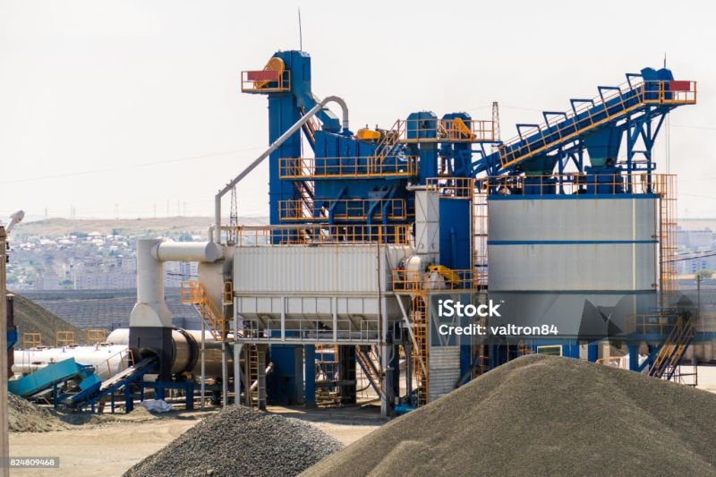

Asfalt zavod növləri: Hansını seçək?
Şəhərləşmə və sənayenin inkişafında sözsüz ki logistika və transportun əhəmiyyəti danılmaz faktordur. Məsələnənin daha dərininə endiyimiz zaman isə bütün bu daşıma xidmətlərinin həyata keçirilə bilməsinin əsas səbəbinin asfalt olduğunu görürük. İstehsalat prosesi və zavod dizaynı isə müştərinin və sahibkarın tələblərinə uyğun olaraq ya geniş miqyaslı və davamlı istehsal imkanı yaradan sadə baraban tipli, yada, müxtəlif qarışıqlar almaq və daha keyfiyyətli asfalt əldə etmək üçün batch tipli seçilir.
Vurğulamaq lazımdır ki soyuq aqreqatın qızdırılması üçün hər iki variantdada quruducu və qızdırıcı barabandan istifadə olunur. Əsas fərq isə sadə tipli asfalt zavodda bitum və isti aqretaq baraban daxilində qarışdırılır. Batch tipli asfalt zavodlarda isə qızdırılmış aqreqat ələklər vasitəsi ilə uyğun ölçülərə ayrıldıqdan sonra dozaj məntiqi ilə fərqli tipdə asfalt qarışıqlarının alınması üçün mixerdə bitumla qarışdırılır.
Bəs əsas seçim meyarları nələrdir?
✅ Sadə baraban tipli asfalt zavodlar:
▶ Effektivlik: Sabit istehsal tələb edən genişmiqyaslı layihələr üçün idealdır
▶ Sərfəli: Daha az enerji sərfiyyatı və sadə proseslər sayəsində əməliyyat və ilkin quraşdırma xərcləri aşağıdır.
✅ Batch tipli asfalt zavodlar:
▶ Çeviklik: Müxtəlif qarışıq dizaynlarına və ya kiçik partiyalara ehtiyac olan layihələr üçün mükəmməldir.
▶ Dəqiqlik: Qarışıq tərkibinə daha çox nəzarət imkanı verərək, xüsusi tətbiqlər üçün yüksək keyfiyyətli asfalt təmin edir.
Sizin asfalt zavodları ilə bağlı təcrübəniz necədir? Hansını üstün tutursunuz və niyə?
#Tikinti #Mühəndislik #Asphalt
Photo Credit: iStock/valtron84